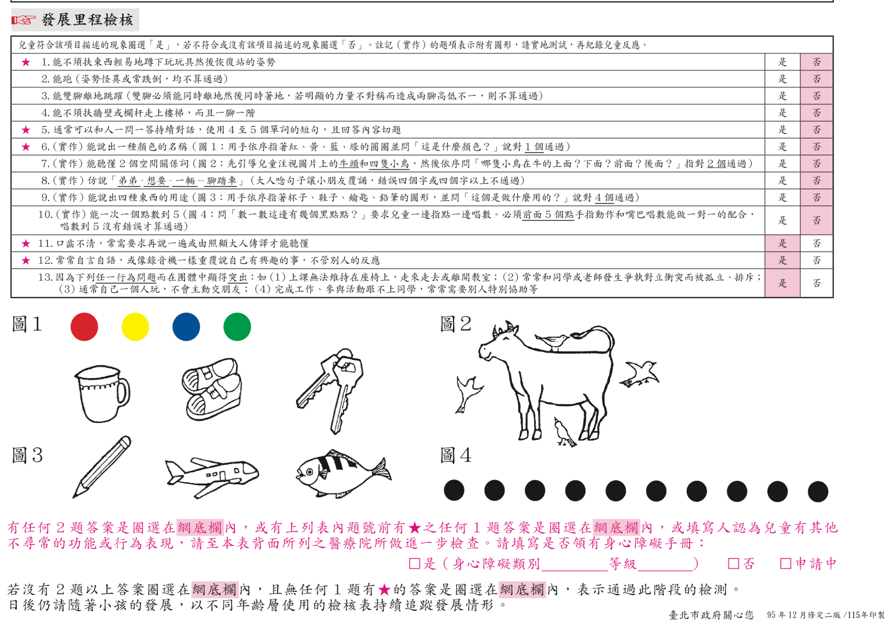
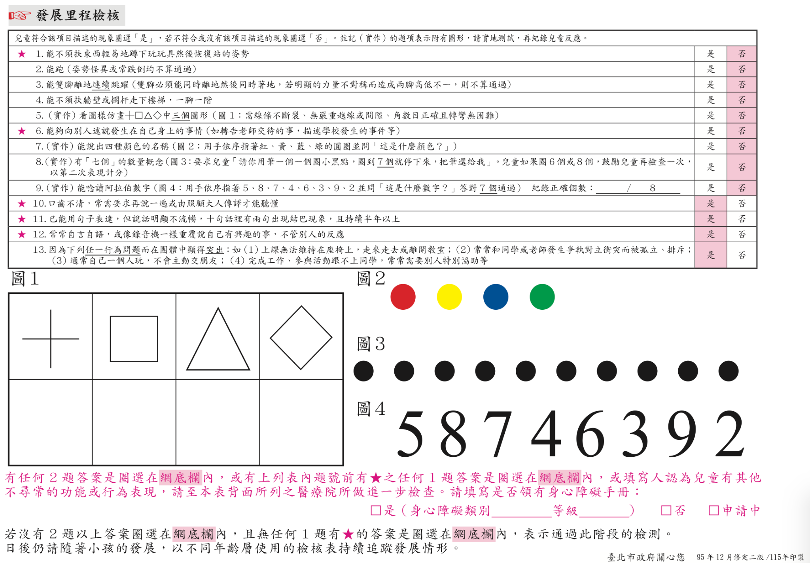

協助彙整幼兒背景資料、國民健康署兒童發展篩檢、社會適應表現檢核表、ASQ:SE-2-TC，以及臺北市發展里程檢核結果，並產生可列印的整合摘要。
請完成各項評量資料後產生整合報告，確認內容無誤即可送出。請勿輸入幼兒真實姓名、身分證字號或園所名稱。正式判讀仍應依各工具正式手冊及授權規範辦理。
設計者：國家教育研究院黃彥融副研究員
依你提供的 4–5 歲與 5–7 歲「評估結果量表／分數對照表」設定。系統會依實足月齡自動建議版本，也可手動調整。四個發展面向得分皆為必填，各發展面向會依切截分數判定「滿分／通過但未達滿分／異常」，並形成整體評估結果。
| 發展面向 | 得分 | 切截分數 | 最高分 | 結果 |
|---|---|---|---|---|
| 粗大動作 | — | — | — | |
| 精細動作 | — | — | — | |
| 認知語言 | — | — | — | |
| 社會發展 | — | — | — |
整體評估類別依你提供的表單：全部發展面向均達滿分（白色區）；任一發展面向通過但未達滿分（淺灰色區）；任一發展面向異常（深灰色區）。
請依正式手冊完成計分後，輸入五個向度的組合分數、標準分數與百分等級；本區所有分數欄位皆為必填。折線圖以「標準分數」呈現五向度剖面，其他分數保留於表格。
| 向度 | 組合分數 | 標準分數 | 百分等級 | 提示 |
|---|
請輸入12個分量表的「量表分數」；12個量表分數皆為必填。原始分數請保留於正式作答／計分資料中，不需在本工具重複輸入。系統將自動計算五個向度平均數。
| 分量表 | 量表分數 | 所屬向度 |
|---|
| 五個向度 | 平均量表分數 |
|---|
切截分數依你提供的「ASQ:SE-2 繁體中文版切截分數」表設定。正式研究與臨床／教育判讀仍應以正式中文版手冊為準。
| 年齡層（月） | 中文版切截分數 |
|---|---|
| 2 | 45 |
| 6 | 55 |
| 18 | 75 |
| 24 | 75 |
| 30 | 100 |
| 36 | 110 |
| 48 | 90 |
| 60 | 110 |
此區將你提供的臺北市 4 歲與 5 歲發展里程檢核表放入網站，作為課程補充。系統不重新改寫原表題目，而是保留原始表單影像，並依表單下方的判讀規則協助彙整結果。
依你提供的表單說明：若有 2 題以上答案落在網底欄，或任一 ★ 題答案落在網底欄，或填寫人認為兒童有其他不尋常的功能或行為表現，建議至表單所列醫療院所做進一步檢查；若均未符合上述情形，表示通過此階段檢測，仍應持續追蹤發展情形。

